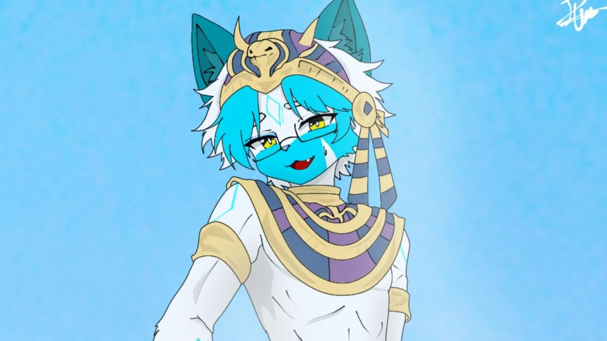

About Kurkaru

Kurkaru is a soft-spoken arctic fox with a quiet hint of cunning in his eyes. In his heart lives a dream, to become a writer like Fyodor Dostoevsky, weaving stories that linger in the soul. One day, he hopes to bring his own furry visual novel to life, a world shaped by imagination and feeling.
He spends his days wandering between pages of books, melodies of musical instruments, and the thrill of games. Music calls to him as well, and he finds joy playing in a band, where every note feels like another story waiting to be told. Curiosity guides him, especially toward languages. Words from different worlds fascinate him, and now he moves comfortably between Indonesian, English, and German, always listening, always learning. 🦊✨
Social Media
Game Gallery
He is truly skilled at playing Mobile Legends, but he's just as good at other games like Free Fire, PUBG, Roblox, Valorant, Genshin Impact, Honkai: Star Rail, Zenless Zone Zero, and others.!